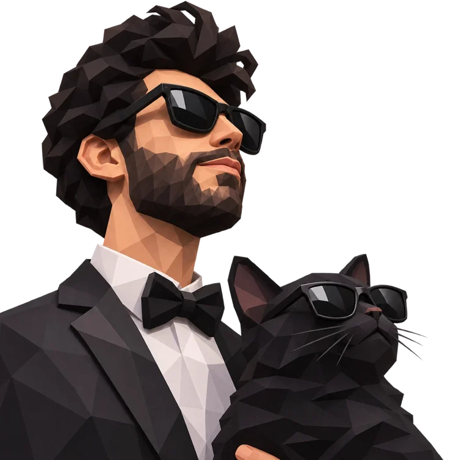
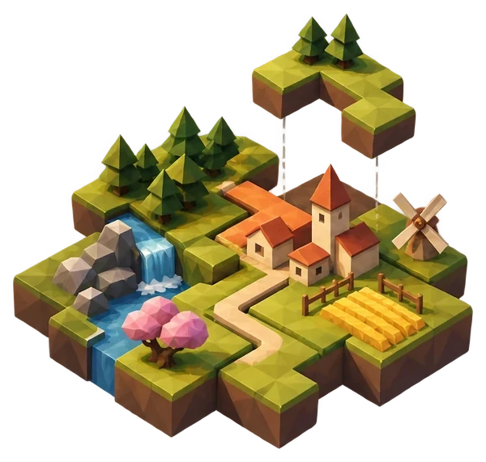
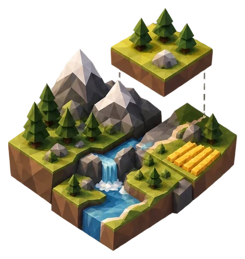
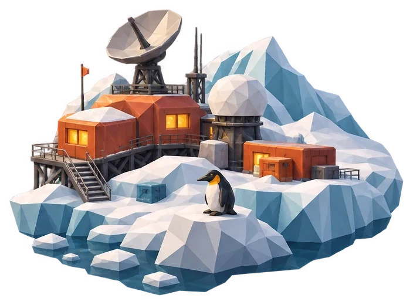

FadiSultan
Web & game developer · Strasbourg
I build full-stack TypeScript apps, and games whose worlds grow from a few small rules.
This island is built by Wave Function Collapse when the page loads, then drawn with Three.js. Scroll to fly over it.

Who I am
Day to day, I do web development and game development, at work and in my own projects.
I’m also a Computer Science student (BUT Informatique) at IUT Robert Schuman in Strasbourg.

Latest project · 3D game · browser
TrisTik
A cozy 3D tile-placement game played with tetrominoes.


React · TypeScript · Three.js · Zustand · Tailwind
Web · full-stack
CVie.fr
A free, open-source CV platform.
React 19 · Vite · Tailwind · Hono · Bun · Prisma · PostgreSQL
Web · full-stack
Formio
A Google Forms alternative where questions can carry audio clips.
Next.js · Express · TypeScript · Prisma · Supabase

3D · Blender add-on
WFCTerrainDesigner
Builds modular 3D terrain in Blender with the Wave Function Collapse algorithm.

Python · Blender 3.0+ · Wave Function Collapse

Video game · in development
Adeli
A colony management game set in Antarctica.
Game design · Simulation · Strategy
Stack
- Front-end
- TypeScript · JavaScript · React · Next.js · Tailwind · Vite · HTML · CSS
- Back-end
- Node.js · Bun · Hono · Express · Prisma · PostgreSQL · Supabase
- Games & 3D
- Three.js · C# · Blender · Python · Java
- Systems & tools
- C · Linux · Git · Figma
Also
- Pokandemaths Pokémon-style educational game, Java
- KeepBoard clipboard history for Linux, Python
- C-Network-Programming network programming in C
Write to me
Always up for talking web, games, 3D or a fun project.
“Plans are great. But sometimes you just have to pretend you know what you’re doing.” — Jim Halpert